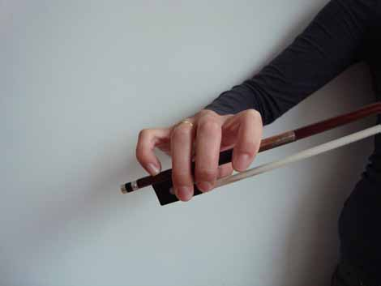

First Steps to Playing Violin
Playing the violin and making a beautiful tone requires many things to be in place. The goal of the Suzuki Method is to make achieveing all these skills "easy" by teaching them to the student in gradual, incremental steps and at just the right level of difficulty for the student.
Non-Musical Readiness
Here are the things that need to be in place before we even begin lessons:
- Concentration. The student must be able to pay attention to the teacher (this may not look the same in each student!), and carry their attention for a span of at least 5 minutes on one subject.
- Willingness to follow directions. The student must be able to listen to the instructor, and demonstrate that they understand by trying to do the action that the teacher is modeling.
- Enthusiasm. The student must be at least somewhat enthusiastic about the process of learning violin on their own. If there is no enthusiasm from the student and they hate violin, what is the point? Might as well teach them the same non-musical skills through a different area of focus.
First Steps: Rhythm
There is a process to how we introduce the rhythms for the first song.
Some useful things to do with your child before you start lessons to help cultivate a sense of rhythm:
- Take Music Together classes!Attending classes can help your child build skill in the fundamentals of pitch and rhythm. Dancing, playing with instruments and singing together all help your child get to the point where they're ready for lessons. See our page on Early Childhood Music for more information.
- Toss or bounce a ball to beat.This is a great way to practice "active listening" to the songs your child will learn.
- Tapping the rhythms to the first song.Once the seeds of the rhythm skills have been planted using the above methods, it will be easier for the child to tap the rhythms to the first song.
- Handshaking the rhythms.The reason why we do this next is because this introduces direction and size of movement into the rhythms, which is important for the development of the bow arm in violin playing.
- Rhythms with the bow on the shoulder.This step will happen once the child has internalized the bow hold, and it involves doing the rhytnms with the movements learned with the handshakes, except now with the bow resting on the left shoulder. This is the final step for the rhythms before playing them on violin!
First Steps: Posture
We're breaking the overall skill of "playing violin" into three different distinct postural groups.
Bow Hand

Look at the fingers hanging over.
- Drape right hand over the stick of the bow, so that the fingers are hanging over the bow.
- Place the thumb on the silver ring on the bottom of the frog (this is different from the picture above). The thumb will be on its tip, and slightly bent.
- The little finger goes on its tip, on top of the stick of the bow.
Holding the Violin
Here are the Four Steps (when the parent places it):
- Stand straight and tall, and look straight ahead, with your arms relaxed by your sides.
- Place violin on "shelf".
- Turn your nose to face the scroll.
- Drop your chin into the chinrest.